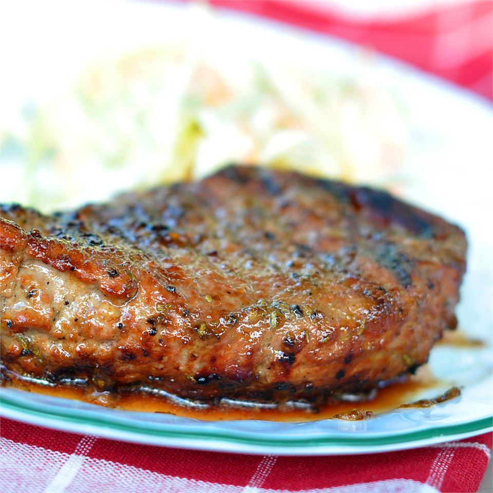

Grilled Delmonico Steaks

Description
Marinated steaks so tender you can cut with a fork! Friends and family always come running when they know I'm grilling.
Ingredients
- 1/2 cup olive oil
- 6 tablespoons soy sauce
- 1/4 cup minced garlic
- 1/2 medium onion, chopped
- 2 tablespoons salt
- 1 tablespoon pepper
- 1 tablespoon crushed dried rosmary
- 3 tablespoons steak seasoning
- 3 tablespoons steak sauce
- 4 10-ounce Delmonico(rib-eye) steaks
Steps
-
Combine the olive oil, Worcestershire sauce, soy sauce, garlic, onion, salt, pepper, rosemary, steak seasoning, and steak sauce in the container of a food processor or blender. Process until well blended.
-
Prick steaks on both sides with a fork, and place in a shallow container with a lid. Pour marinade over steaks, cover, and refrigerate at least 3 hours, or overnight.
-
Preheat an outdoor grill for medium heat, or light charcoal, and wait until coals are completely white. Soaked wood chips may be added to the coals when ready for a smoky flavor, if you like.
-
Remove steaks from marinade, and discard the marinade. Lightly oil the grilling surface, and place steaks on the grill. Cover, and grill steaks for about 10 minutes on each side, or to your desired degree of doneness.